General Knowledge
752 no-prep General Knowledge resources with answer keys: reading comprehension, reading trails, and more – filter by grade.
752 resources
Grade

Family Life Reading Comprehension Passages | Life Skills Scavenger Hunt 5-6

Grado Celsius – Italian Reading: Cloze, Listening & Word Search

Fumo – Italian Reading: Cloze Text, Listening Task & Word Search (Scheda)

Gomma da masticare – Italian Reading: Cloze, Listening & Word Search

Golf – Italian Reading: Cloze Text, Listening Task & Word Search (Scheda)

Golden retriever – Italian Reading: Cloze, Listening & Word Search

Glutine – Italian Reading: Cloze Text, Listening Task & Word Search (Scheda)

Glucidi – Italian Reading: Cloze Text, Listening Task & Word Search (Scheda)

Globalizzazione – Italian Reading: Cloze, Listening & Word Search

Galles – Italian Reading: Cloze Text, Listening Task & Word Search (Scheda)

Galassia – Italian Reading: Cloze Text, Listening Task & Word Search (Scheda)

Fuso orario – Italian Reading: Cloze Text, Listening Task & Word Search (Scheda)

Furto – Italian Reading: Cloze Text, Listening Task & Word Search (Scheda)

Franz Kafka – Italian Reading: Cloze Text, Listening Task & Word Search (Scheda)

Fuoco – Italian Reading: Cloze Text, Listening Task & Word Search (Scheda)

Fucile – Italian Reading: Cloze Text, Listening Task & Word Search (Scheda)
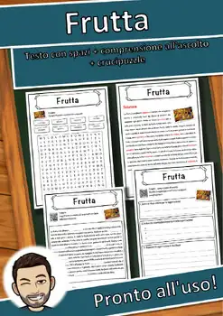
Frutta – Italian Reading: Cloze Text, Listening Task & Word Search (Scheda)
Frittelle di patate – Italian Reading: Cloze, Listening & Word Search
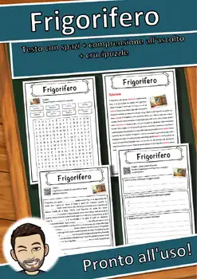
Frigorifero – Italian Reading: Cloze Text, Listening Task & Word Search (Scheda)
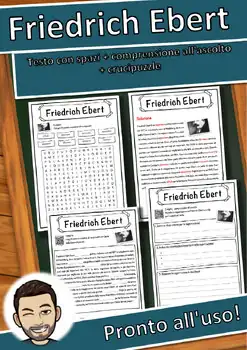
Friedrich Ebert – Italian Reading: Cloze, Listening & Word Search
Friedensreich Hundertwasser – Italian Reading: Cloze, Listening & Word Search
Freno – Italian Reading: Cloze Text, Listening Task & Word Search (Scheda)
Freccette – Italian Reading: Cloze Text, Listening Task & Word Search (Scheda)
Fratturazione idraulica – Italian Reading: Cloze, Listening & Word Search
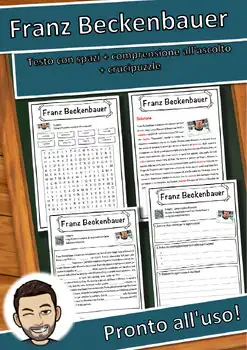
Franz Beckenbauer – Italian Reading: Cloze, Listening & Word Search
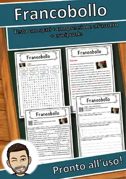
Francobollo – Italian Reading: Cloze Text, Listening Task & Word Search (Scheda)
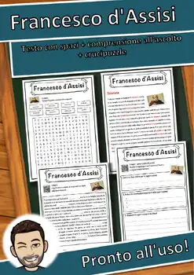
Francesco d'Assisi – Italian Reading: Cloze, Listening & Word Search
Fotosintesi clorofilliana – Italian Reading: Cloze, Listening & Word Search
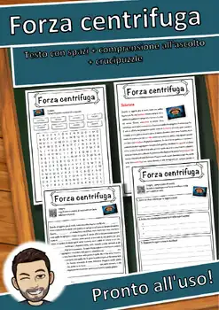
Forza centrifuga – Italian Reading: Cloze, Listening & Word Search
Fortezza – Italian Reading: Cloze Text, Listening Task & Word Search (Scheda)
Formula 1 – Italian Reading: Cloze Text, Listening Task & Word Search (Scheda)
Formaggio – Italian Reading: Cloze Text, Listening Task & Word Search (Scheda)
Età del bronzo – Italian Reading: Cloze, Listening & Word Search
Fisica – Italian Reading: Cloze Text, Listening Task & Word Search (Scheda)
Finestra – Italian Reading: Cloze Text, Listening Task & Word Search (Scheda)
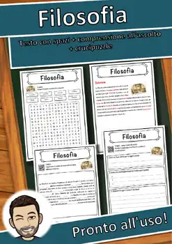
Filosofia – Italian Reading: Cloze Text, Listening Task & Word Search (Scheda)
Feto – Italian Reading: Cloze Text, Listening Task & Word Search (Scheda)
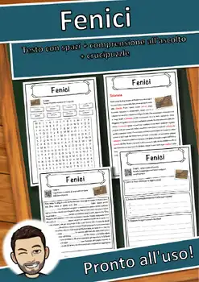
Fenici – Italian Reading: Cloze Text, Listening Task & Word Search (Scheda)
Felicità – Italian Reading: Cloze Text, Listening Task & Word Search (Scheda)
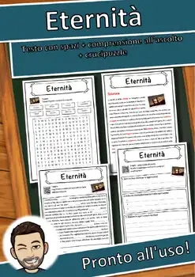
Eternità – Italian Reading: Cloze Text, Listening Task & Word Search (Scheda)
Eredità – Italian Reading: Cloze Text, Listening Task & Word Search (Scheda)
Cultura – Italian Reading: Cloze Text, Listening Task & Word Search (Scheda)
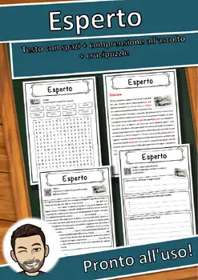
Esperto – Italian Reading: Cloze Text, Listening Task & Word Search (Scheda)
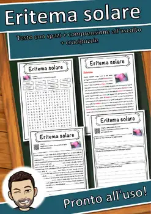
Eritema solare – Italian Reading: Cloze, Listening & Word Search
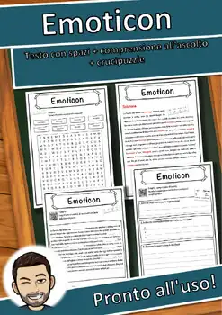
Emoticon – Italian Reading: Cloze Text, Listening Task & Word Search (Scheda)
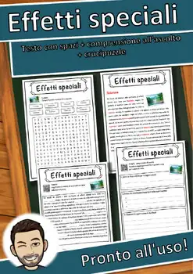
Effetti speciali – Italian Reading: Cloze, Listening & Word Search
Eco – Italian Reading: Cloze Text, Listening Task & Word Search (Scheda)
Duca – Italian Reading: Cloze Text, Listening Task & Word Search (Scheda)
No resources found – try a different search term or filter.